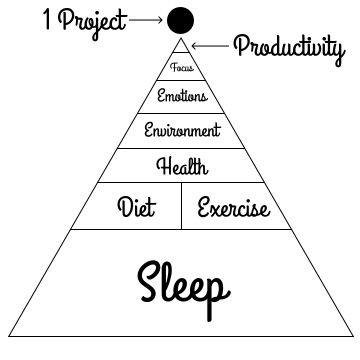
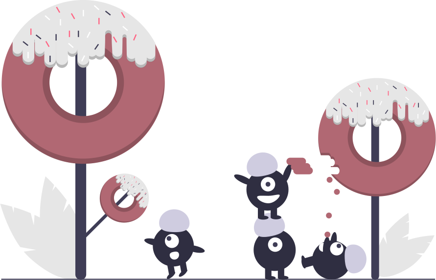
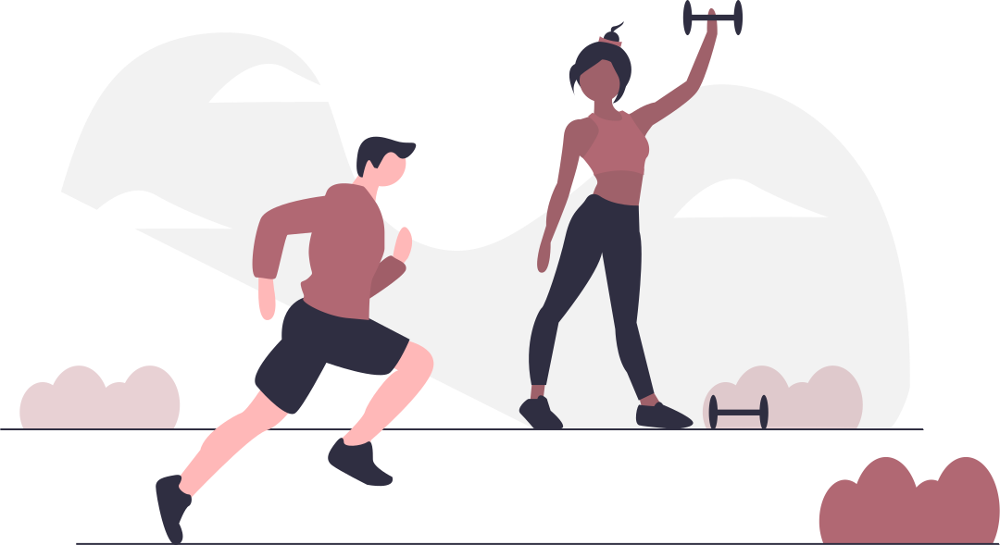
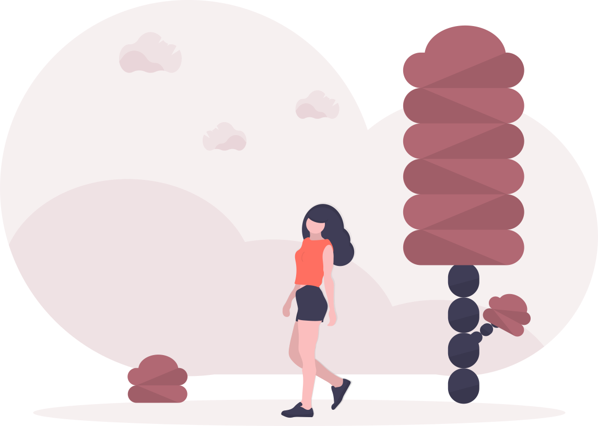
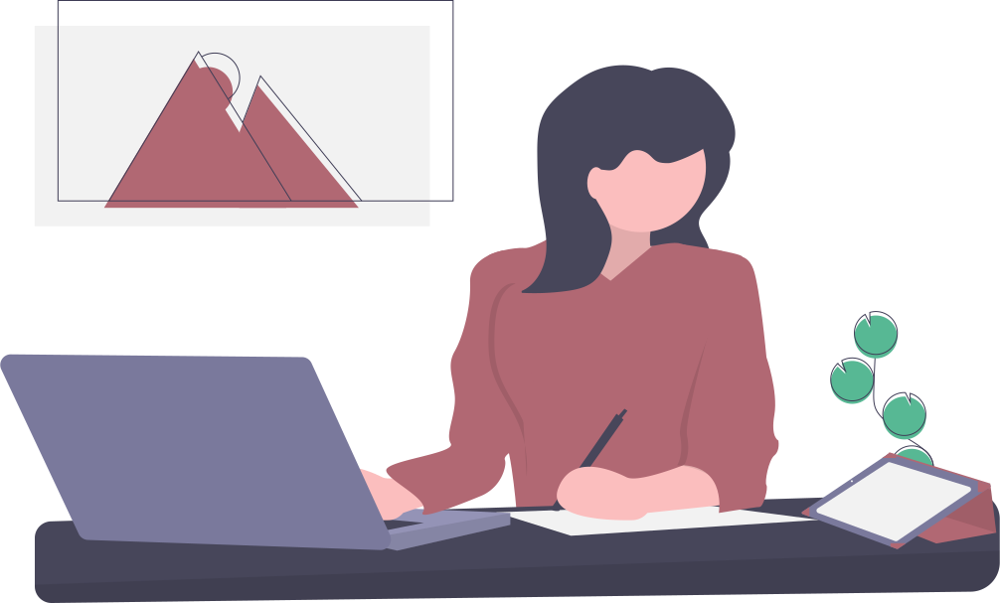
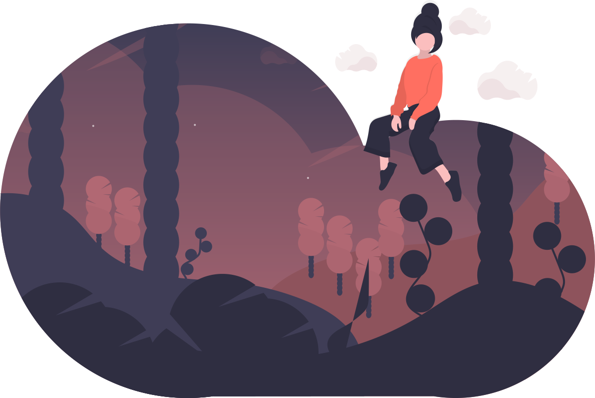

The Perfect Schedule, Part 2
The Perfect Schedule was flawed, because I misunderstood what begets productivity. In reality, human productivity comes as a result of a totally different pyramid of conditions.
The Pyramid of Progress
Productivity is only possible after you combine these ingredients:
Sleep
Of the three ingredients of health: diet, exercise, and sleep; sleep is by far the bedrock element. It's the largest and most important. If you do not sleep, then you are making it more difficult to eat right and more difficult to stick to a workout schedule. But productivity comes as a result of working hard, over long hours, burning the so-called midnight oil, Right?
Wrong.
Extremely successful people have given TED talks1 about how important sleep is. In our modern mythos of productivity-obsession, it's common for people to pull all nighters. If you believe that productivity is the result of late nights and long hours, then it seems paradoxical that getting more sleep will result in getting more done, but it's true. Sacrificing your sleep for a short term gain in productivity, whether to complete a project or catch up on a school assignment, is a losing strategy. It only makes you fall further behind on future projects or assignments. It's the most unsustainable thing you can do.
Lack of sleep is the single best ally of procrastination.
Remember my story about The Perfect Schedule? What happened after I skipped a night of sleep? If I don't sleep, I tend towards everything easy. Junk food, not exercising, and not doing what I know I must. So, procrastinating.
Science has established that sleep is important for functions such as memory formation, regulating emotions, and making decisions.2 Translate that to our anti-procrastination goals, and we get that sleep is important for:
- Deciding to eat healthy foods and exercise
- Staying motivated to complete a project
- Learning the next skill or tool
Sleep is the single biggest ingredient of health.
Diet, Exercise
Health Advice Disclaimer
When it comes to understanding how important diet is to health, there are larger considerations which are not pondered here. You should do your own research into diet and draw your own conclusions. All of the ideas presented here are designed to support an anti-procrastination diet. Since that phrase sounds so painfully like an infomercial type thing, I just want to pause here and explain. I'm not trying to sell you anything. This is just what I've found works best for me, and it's also supported by science. The diet ideals captured here are all in service of geting things done.
Drink Plenty of Water
The physical and mental effects of being extremely dehydrated are well known. However, we understimate the effects of minor (2-5%) dehydration on our mind. Being dehydrated can mean less motivation, reduced ability to form memory and restricted decision making capacity.3 When you wake up in the morning, you are your most dehydrated, so I put a tall glass of water on my nightstand before I go to sleep. The first thing I do when I wake up in the morning? Drink water.
Limit Refined Sugars
Depending on the day of the week, nutritionists and scientists can't decide on whether or not eggs are good for you.4 Unlike the seemingly endless debate around eggs (and a lot of other foods), nutritionists and scientists always consistently agree on one thing: excessive sugar is bad for you. There's a lot of scientific evidence to support that eating large amounts of refined sugars can negatively impact memory formation, behavior, and focus.5
That means eating a lot of sugar can help your brain design new and insidious ways to procrastinate.
If you want to fight procrastination at a basic level, reduce the amount of refined sugar in your diet. Candy, ice cream, slurpies, you know it's fake and sweet and bad for you. But know now that it's also keeping you from your life goals. It's helping you procrastinate. To combat this, the best thing you can do is educate yourself about the Gylcemic Index. The Glycemic Index is a ranking of foods by how fast they influence your blood sugar. That sugar rush you're used to feeling after eating a sweet dessert is your body feeling the effects of heightened blood sugar. This page is not a primer on good diet, so go read about the Glycemic Index.
Avoid sugar. It really does effect your brain.
For general diet advice, go read a reputable source like Harvard's Medical School.6
Workout Daily
If someone came to you and said, "Take this pill every day, and you'll be 8% smarter," then would you take it? Of course you would! A smart pill that made you just 2-3% smarter would be the best selling pharmaceutical ever invented. Regular exercise has been estimated to provide an up to 8% increase in cognitive function. Exercise is the smart pill, and it's free. To get this benefit, you need to exercise daily and achieve 30 minutes of an elevated heart rate with your body in motion.7
Exercise is even more powerful than that though. It's the anti-procrastination wonder drug. Exercise increases your energy, sharpens your focus, enhances your mood, and helps your impulse control all together at once.8 Repetitive exercise gets boring, so I recommend switching it up often. Swimming is the best aerobic exercise you can do, because it works all of your body's muscles and it's low impact on your joints. If you don't have access to water nearby (I don't), then you can switch it up by alternating running and interval training.
Despite the name of this section, you should remember to rest your body as well. Don't double up on the same exercises multiple days in a row. I run every other day. I also take one day off a week: Friday.
Exercise is the wonder drug to keep you focused.
Environment
Engineer your environment to make the right choice the easiest choice. Put obstacles in front of procrastination, while making the work you want to do easier to access. You've probably heard the story about the person trying to become a runner who tried everything but just couldn't consistently stick to a running schedule. The only way they finally did it was by going to sleep in their exercise clothes. When they woke up, it was easier to just... go running! That was an expert anti-procrastinator. That person figured out that an environment built for productivity is a safe environment.
Smartphone Warning
Your smartphone is your biggest environmental enemy. Your smartphone is the nexus of distraction. My advice:
- When you go to sleep, put it in your closet to charge.
- When you work, leave it in your desk drawer on silent.
- Uninstall anything that requires you check on it multiple times a day.
- Turn off notifications. All of them. All. Nothing is more important than your concentration.
It doesn't take much to add some friction in front of the things you shouldn't be doing. Hide the cookie jar in the back of the pantry, uninstall the app that keeps sucking you in, block the website you're stuck always reading. Conversely, make it easy to do the right things. If you're trying to become a painter, set up your oil and easel like it's ready-to-go before you go to bed every night. If you're trying to write a book, put the last manuscript you need to copy edit on top of the coffee maker.
Emotions
We falsely believe that we're creatures of logic and reason. We're more like 95% emotion, 3% reason, and 2% logic. Your ability to get things done depends on how you feel about things. Put so simply, this feels self-evident, yet everyone keeps going around forgetting how important it is to take breaks, walk around, socialize, and recharge.
Take regular breaks when you're working. Those breaks should involve standing up, stretching, and walking around. Think about something else besides what you've been focusing on. Socialize with your co-workers, your family, your friends. Be a human--not a productivity robot.
Research has shown that walking in nature will help reset your brain.9

Our brains were designed for forests, plains, mountains, the out-of-doors. They were not designed to stay focused in a uniformly lit office building with gray walls and cream colored cubicles.
A short film called Ode to Desolation, about a naturalist named Jim Henterly, captures this idea perfectly in just a few words,
We lived in wilderness for most of our careers here on the planet, and it's where our brain developed.
That's where we learned beauty.
10
Take care of your emotions. If you work in a stressful job, make sure you take time to relax and unwind to maintain balance.
Focus
There's this myth that the human brain is really good at active task multitasking. I qualify this as active task multitasking, because people think that you can actively do two things that require your attention. For example, there's this belief that you can productively read and process email while listening to a podcast at the same time. Or that you can enjoy dinner and quality time with a loved one while still scanning through Instagram on your phone. I see people trying to multitask like that all the time.
The human brain is not wired to simultaneously do two things that require your active attention.11
What's even worse though is that your brain thinks it's good at active multitasking. The positive feeling of being immersed in stimuli presents the illusion that you're writing good email responses and fully absorbing the podcast, or that your loved one doesn't notice you on Instagram and you're really hearing every word, while actually missing most of the conversation.
You'd be much more effective if you did these things one at a time. You'd get more done, faster. So don't multitask. Focus.
The cost of context switching is also very high. Context switching is when you work on multiple, very different, projects at once, and it's the price your brain has to pay to go from one context to another. As a result, if you can, you should only work on one project at a time. This helps fight procrastination, because it simplifies your decision making. You're not having to juggle five life goals anymore. You have one thing you're working on right now, and when you have time, then...
Just go do it.
Productivity
I've found that productivity is a result of creating a healthy foundation by taking care of your mind and body through:
- Never sacrificing your sleep, as it is your bedrock
- Drinking lots of water to keep your mind clear
- Reducing the amount of refined sugar you eat
- Exercising daily for focus and mental growth
Once you have that foundation of health, you need to think critically about your environment. Where are your sources of distraction? How do you make them harder to access? What are you trying to accomplish? How do you make it easier to practice on your goal? Engineer your environment to make progress easy and procrastination hard.
With a supportive environment, you can finally turn to your mind as the last battleground where you have to face procrastination head-on. You can block the app, hide the cookie jar, engineer your environment perfectly, but you're smart enough to undo all those things, if you don't feel happy, motivated, and positive about your upcoming task. You can literally talk yourself into doing something. Say outloud how excited you are to keep practicing your painting today or to write the next chapter of your novel. Write it down. These strategies seem silly. They work.
And finally, remember that you have to say 'no' a lot before you can say 'yes'. Many ultra successful people, such as Steve Jobs and Warren Buffet have described this strategy of relentless focus. Do one thing at a time, but do it well, and you will quickly be able to add up a lot of one things. Try to limit your number of projects in-progress. Don't multitask. Focus.
With all of these ingredients combined, I actually realized that I don't need any schedule at all. Instead, I have all the ingredients in The Pyramid of Progress for staying healthy and productive. As a result, there's no where for the procrastination monster to live in my life.
It feels great. It feels like you're sitting on top of the world.
Sources
- How to succeed? Get more sleep, TED Talk
- Our poor sleeping habits are filling our brains with neurotoxins, Quartz
- Water, hydration, and health, Oxford Academic
- Are eggs good for you?, Google Search Results
- Sugar and diet resources:
- Evidence for sugar addiction, ScienceDirect
- Sugar highs and lows: the impact of diet on cognitive function, The Journal of Physiology
- Does too much sugar make for lost memories?, The Journal of Physiology
- Negative Impact of Sugar on the Brain, verywellmind
- 8 Big Lies About Sugar We Should Unlearn, healthline
- Glycemic index for 60+ foods, Harvard Health Publishing
- Foods linked to better brainpower, Harvard Health Publishing
- Neurobiological effects of physical exercise, Wikipedia
- 6 Ways Exercise Makes You Smarter, Forbes
- This Is Your Brain on Nature, National Geographic
- Ode to Desoltion, Lindsey Hagen
- Think You're Multitasking? Think Again, NPR